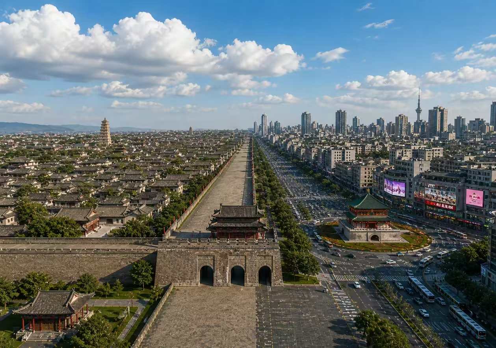
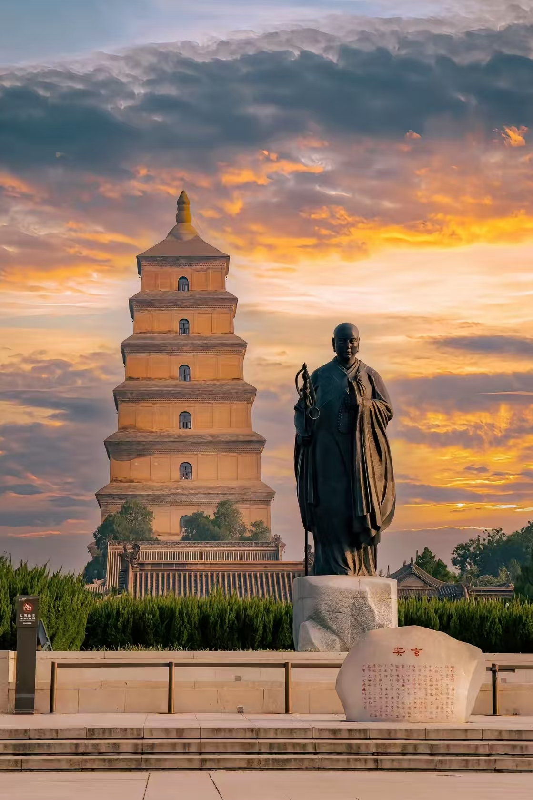
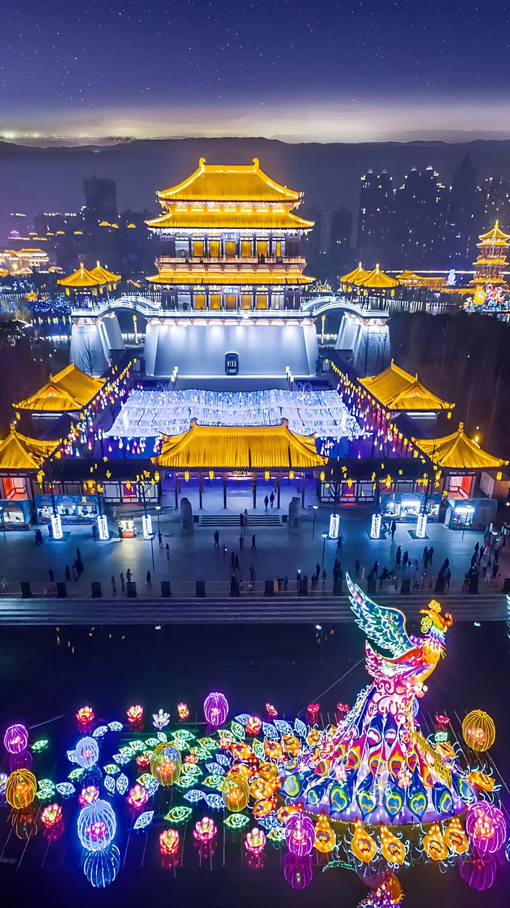
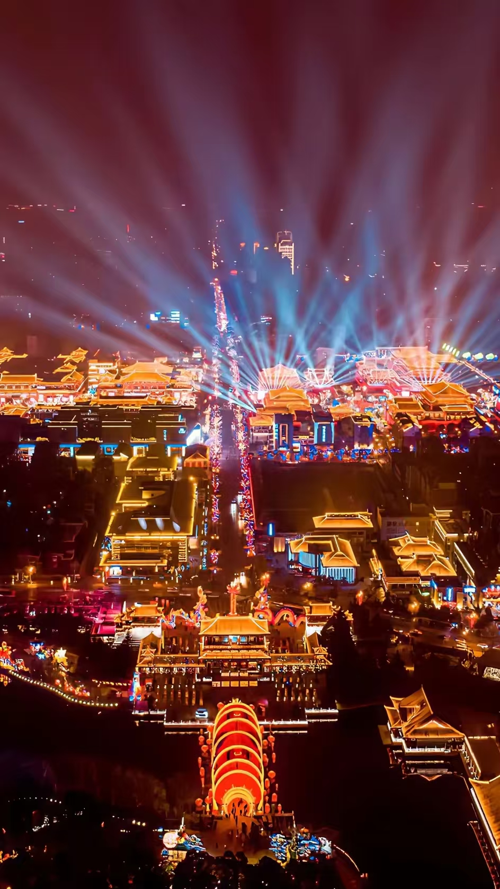
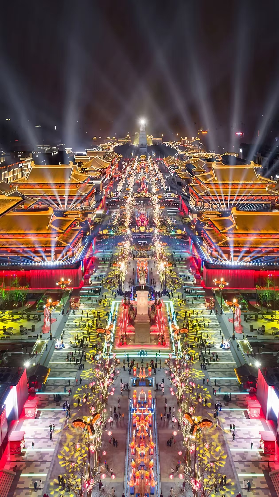

Xi'an is where China's history hits you in the face. Not metaphorically — you walk into a pit and there are eight thousand terracotta soldiers staring back at you, each one with a different face, different posture, different expression. It's one of those experiences that photos genuinely cannot prepare you for. The city has been drawing visitors for decades and the tourist infrastructure shows it — which means it's easy to navigate but also easy to get ripped off if you're not paying attention.

The Giant Wild Goose Pagoda at sunset — built under the supervision of the monk Xuanzang, who traveled to India and back to collect Buddhist scriptures.
Nothing prepares you for the scale. You walk down the steps into Pit 1 and the whole thing opens up — hundreds of life-sized warriors standing in precise military formation, front line, main force, flanks, all perfectly arranged. The immediate feeling is that they might just start moving. Two thousand years of stillness that feels somehow temporary.
What gets most people is the faces. Every single warrior is different. There's an older soldier with deep lines across his forehead, a young one with something almost nervous around his mouth. The detail on the armor, the hairstyles, even individual strands of hair — all visible, all distinct. They don't look like artifacts on display. They look like soldiers taking a break.
There are three pits worth seeing. Pit 1 is the main event — biggest, most dramatic, the one you've seen in every photo. Pit 2 shows mixed troop formations with kneeling and standing archers. Pit 3 is the command center, smaller but historically significant. Budget at least three hours for the whole site, more if you want to read the information panels properly.
Outside Xi'an Railway Station, drivers will approach you offering cheap rides or "internal tickets" to the Terracotta Army. Every single one is either overcharging or taking you somewhere you don't want to go first. Take Tourist Bus Route 5 (游5路) from the station square — it goes directly to the site, costs a few yuan, and takes about an hour. Or book a DiDi.
Book tickets in advance through Trip.com or the official website — up to 7 days ahead with your passport. At the gate, go to the manual lane for foreign passport holders rather than the automated ID gates. Morning slots have better light for photos and slightly smaller crowds.
The Ming Dynasty city wall — 13.7km around, and the most complete ancient city wall still standing anywhere in the world.
The Xi'an city wall is the real thing — not a reconstruction, not a replica. Built in the Ming Dynasty, maintained for six centuries, completely intact. You can walk the full perimeter or rent a bicycle and cycle it. Cycling is the right call. The whole loop takes about an hour at a relaxed pace, and the wall is wide enough that it never feels cramped.
Ride counterclockwise — fewer inclines, better scenery. The stretch from the East Gate to the South Gate has the best views: ancient rooftops inside the wall on one side, modern high-rises pushing up against the skyline on the other. The contrast is genuinely striking in a way that makes Xi'an feel different from other Chinese cities.
Single bikes rent for ¥35-45 for three hours, tandem bikes ¥50-90. Deposit is ¥200-300, paid by mobile or card. The South Gate (Yongning Gate) rental station runs until 10pm and is the only one that accepts returns after 6pm — if you're planning an evening ride, plan your return accordingly.
The South Gate (Yongning Gate) is where every tour group enters. It's crowded and hard to photograph. Enter from Hanguang Gate or one of the smaller side gates instead — same wall, a fraction of the people.



Xi'an at night — the Tang-style architecture lit up around the Great Tang All Day Mall. Worth an evening walk even if you're not shopping.
The Muslim Quarter is worth going to, but the main street (Huimin Street) is significantly more tourist-facing than the surrounding alleys. Prices on the main drag run about double what you'd pay one block over, and the quality isn't correspondingly better. Go in, walk through, but eat on Dapiyuan or Sajingqiao instead — that's where the locals actually go.
Yangrou paomo is the dish Xi'an is most serious about. You're given dense flatbreads and told to crumble them into small pieces yourself — the kitchen then cooks them in a rich mutton or beef broth with glass noodles. The broth is deep and savory, not spicy at all. Yi Zhen Lou and Lao Mi Jia are reliable old establishments. Budget ¥25-40 per bowl.
Roujiamo is what people call the world's oldest hamburger — a crispy oven-baked flatbread stuffed with slow-braised minced pork or beef. It's exactly as good as it sounds. Yang Tianyu and Liu Jixiao on the back streets are the names locals mention. Around ¥15-25 each.
Biangbiang noodles are thick, wide, hand-pulled — the kind that land in the bowl with actual weight. Traditionally served in chili oil with garlic, but you can ask for tomato and egg topping if you want something milder. The noodles themselves are the point regardless of what's on top.
For something sweet: zengao is a traditional morning dish of glutinous rice steamed with red dates and red beans, sold in large earthenware pots. Get it early — it usually sells out by mid-morning. And the iced sour plum drink (suanmeitang) that vendors sell everywhere is genuinely refreshing and good for cutting through the heaviness of the food.
The jade, silk and terracotta replica shops around the main tourist sites sell overpriced fakes almost exclusively. If you want something worth buying, go to the Shaanxi History Museum gift shop or the Shuyuanmen cultural street near the South Gate — shadow puppets, paper cutting and handmade crafts there are the real thing.
Free admission, but it requires advance booking and the tickets go fast. New slots release at 5pm daily for visits up to 7 days ahead. Have your passport information ready to enter quickly — at peak times the free tickets sell out in minutes. If you miss the free allocation, paid tickets for the special exhibitions get you straight in and include access to the main halls anyway.
Closed Mondays. Pick up the free English audio guide at the service desk when you arrive — the exhibit labels don't have much English otherwise and the collections span prehistoric times through the Tang Dynasty with enough depth to fill several hours.
The metro covers the main areas and is cheap and fast. Pay with Alipay or WeChat's transit QR code. If you'd rather have a physical card, take your passport to any station service window and they'll issue a Chang'antong card.
DiDi works well and accepts international cards. Useful for the Terracotta Army trip or anywhere off the metro lines. For the Terracotta Army specifically, Tourist Bus Route 5 from Xi'an Railway Station is the cheapest and most straightforward option — direct, no transfers, clearly signed.
For boarding high-speed trains, go to the manual lane (人工通道) at the far side of the ticket gates — the automatic readers are for Chinese ID cards. Show your passport to the staff there.
Giant Wild Goose Pagoda — built in 652 AD, survived multiple earthquakes, and still standing in the south of the city.
The Bell Tower and Drum Tower area puts you at the geographic center of the old city, walkable to the Muslim Quarter and with good metro access in every direction. The concentration of international chain hotels here means the check-in process for foreign passport holders is smooth. Best choice for a first visit.
The Giant Wild Goose Pagoda and Qujiang District to the south is quieter, greener, and better for evening walks around the Tang-style shopping streets and light displays. Upscale mid-range hotels dominate here.
Xiaozhai is a major commercial and transit hub where several metro lines converge. Practical rather than atmospheric, dominated by domestic chains at reasonable prices. Good if you're focused on efficiency over ambience.
Book well ahead for Golden Week and summer peak season — good rooms in central areas fill up fast and prices climb significantly.